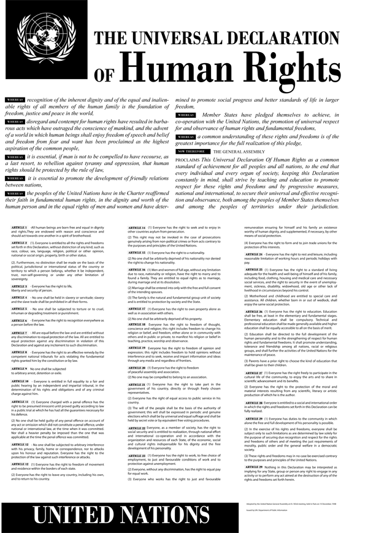

United Nations: The Suppression of the Traffic in Persons
- The 1949 Convention
The 1949 Convention for the Suppression of the Traffic in Persons
In 1949 the UN General Assembly approved the Convention for the Suppression of the Traffic in Persons and of the Exploitation of the Prostitution of Others. It went into force in 1951 and stated in the preamble of the resolution that:
"Whereas prostitution and the accompanying evil of the traffic in persons for the purpose of prostitution are incompatible with the dignity and worth of the human person and endanger the welfare of the individual, the family and the community,
Whereas, with respect to the suppression of the traffic in women and children, the following international instruments are in force […]" (UN Treaty Collection, 1951).
The "instruments in force" refers to the 1904 Agreement, the 1910 Convention, the 1921 Convention, the 1933 Convention, and also the League of Nations 1937 prepared draft Convention. These constituted the foundation for the consolidation and desirable alterations as it pertains to trafficking in persons in 1951 as Article 1 and Article 2 are defined:
"The Parties to the present Convention agree to punish any person who, to gratify the passions of another:
(1) Procures, entices or leads away, for purposes of prostitution, another person, even with the consent of that person;
(2) Exploits the prostitution of another person, even with the consent of that person."
"The Parties to the present Convention further agree to punish any person who:
(1) Keeps or manages, or knowingly finances or takes part in the financing of a brothel;
(2) Knowingly lets or rents a building or other place or any part thereof for the purpose of the prostitution of others" (UN Treaty Collection, 1949).
Human Trafficking in 1949
ACT :
Procure
Entice
Leads Away
dummy
Keeps or Manages or Finances a brothel
+
PURPOSE :
Gratify the passions of another (prostitution)
=
TRAFFIC IN PERSONS
"The Parties to the present Convention further agree to punish any person who: (1) Keeps or manages, or knowingly finances or takes part in the financing of a brothel; (2) Knowingly lets or rents a building or other place or any part thereof for the purpose of the prostitution of others" (UN Treaty Collection, 1949).
During the forty-year period from 1910 Convention to the 1950 Convention some important changes had occurred. Most significantly, the advent of an ideological shift in the notion of victim vs. free agent could be found in the 1950 Convention where "the prostitution of others, even with the consent of that person" applied to all women regardless of age. Such shift could also be detected in the 1950 Conventions definition where the former mean defined as "by fraud, or by means of violence, threats, abuse of authority, or any other means of compulsion", plausibly, was deemed redundant.
Also the term "white slave traffic" had been altered (this was effectuated at the 1921 Convention) into a more inclusive expression "traffic in persons". Though necessary, the alteration was arguably more of a symbolic and semantic nature since it didn’t have any practical impact as the 1910 Convention did include all women regardless of race or ethnicity. Furthermore, it de facto remained a convention aimed to protect individuals forced into prostitution and hence implicitly young girls and women.
The language and content in the 1950 Convention remained consistent as the act "procure, entice, lead away" and the purpose "for purpose of prostitution" was similar to that of the 1910 Convention. In 1948 the UN had adopted the phenomenon cf. the Universal Declaration of Human Rights as a fundamental UN principle. Concepts as dignity and worth were core human rights constituents and overtly in conflict with the sexual exploitation of others. As seen above the human rights language had been incorporated into the preamble of the 1950 Convention.
The 1904 Agreement and the 1910 Convention got superseded by the 1950 Convention for the Suppression of the Traffic in Persons and of the Exploitation of the Prostitution of Others.

"The White Slaves of London" by W.N. Willis 1860-1922